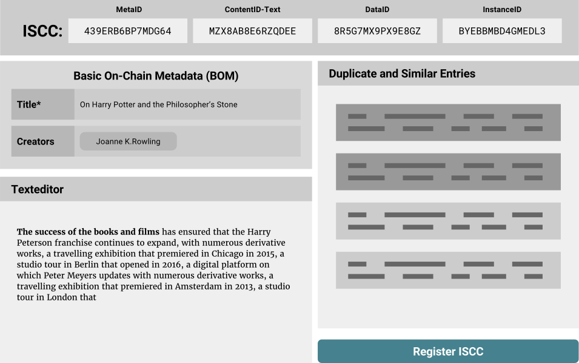

ISCC - Concept¶
Historical context
This page preserves early design rationale for the ISCC. Some proof-of-concept and blockchain-specific statements predate the ISO 24138:2024 standardization work and the current iscc-core / iscc-sdk implementations.
The internet is shifting towards a network of decentralized peer-to-peer transactions. If we want our transactions on the emerging blockchain networks to be about content we need standardized ways to address content. Our transactions might be payments, attributions, reputation, certification, licenses or entirely new kinds of value transfer. All this will happen much faster and easier if we, as a community, can agree on how to identify content in a decentralized environment.
This page started as the higher level concept of an open proposal to the wider content community for a common content identifier. We would like to share our ideas and spark a conversation with journalists, news agencies, content creators, publishers, distributors, libraries, musicians, scientists, developers, lawyers, rights organizations and all the other participants of the content ecosystem.
Introduction¶
The structure and management of global identifiers strongly correlates with the grade of achievable automation and the potential for innovation within and across different sectors of the media industries.
There are many existing standards for media identifiers serving a wide array of use cases. Book publishing uses the ISBN, magazines and journals have the ISSN, music industry has ISRC and ISWC and film has ISAN and EIDR – each of them serving a set of specific purposes. On the other side of the spectrum there are also generic identifiers standards such as the DOI, ITU HANDLE, URN, ARK. The DOI, for example, can be used to identify any digital, physical or abstract object. All these identifiers have important and distinct roles across different industries and use cases.
The most substantial differentiator of the ISCC is the fact that it is algorithmically bound to the digital content it identifies. Other standards require human intervention to assign and track the mapping between identifier and object (binding). Many of those standards focus on how to resolve an identifier to some network location where metadata or the object itself can be found. The ISCC inverts this principle. It gives an answer to the question: "Given some digital content, how can I find its identifier to reference the content in a transaction?". This means that the ISCC for any digital content can be found (generated) from the content itself, without the need to involve any third-party.
As such the ISCC fulfills a distinct role and is not a replacement for established identifiers. Rather it is designed as an umbrella standard to augment established identifiers with enhanced algorithmic features. It can be used in the metadata of existing standards or support discoverability (reverse lookup).
Many of the established systems are based on centralized or hierarchical registries that involve manual and costly management processes. To sustain such systems the costs have to be recouped by fees for identifier assignment, metadata storage or paid access to metadata which inhibits accessibility and discoverability. The overhead, cost and general properties of these systems make them prohibitive for many innovative use cases that require a more informal and generic identifier assignment (eg. granular content). Communities with short lived or user generated content, don't have any agreed-upon global identifiers for their content.
The fast paced development of the digital media economy has led to an increasing fragmentation of identifiers and new barriers in interoperability. For example major e-book retailers do not require an ISBN and instead established their own proprietary identifiers. Amazon has the ASIN, Apple has Apple-ID and Google has GKEY. For many tasks current systems need to track and match all the different vendor specific IDs, which is an inefficient and error prone process.
Resolving an ISCC to a network location, metadata or the content itself can be accomplished with neutral and decentralized blockchain-based registries that don't require a centralized or hierarchical system to manage, track and store unique identifiers, ownership assignments, associated metadata and other information.
Advances in data structures, algorithms, machine learning and the emergence of crypto economics allows us to invent new kinds of media identifiers and re-imagine existing identifiers with innovative use cases in mind. Blockchains and Smart Contracts offer great opportunities in solving many of the challenges of identifier registration, like centralized management, data duplication and disambiguation, vendor lock-in and long term data retention.
This is an open proposal to the digital media community and explores the possibilities of a decentralized content identifier system. We’d like to establish an open standard for persistent, unique, vendor independent and content derived cross-media identifiers that can be stored and managed on global, public and decentralized blockchains. We envision a self-governing ecosystem with a low barrier of entry where commercial and non-commercial initiatives can both innovate and thrive next to each other.
Media Identifiers for Blockchains¶
Media cataloging systems tend to get out of hand and become complex and often unmanageable. Our design proposal is focused on keeping the ISCC system as simple and more importantly as automatable as possible, while maximizing practical value for the most important use cases — meaning you should get out more than you have to put in. With this in mind we come to the following basic design decisions:
A “Meaningful” Identifier¶
In traditional database systems it is recommended practice to work with surrogate keys as identifiers. A surrogate key is a dumb number and has no business meaning and is completely decoupled from the data it identifies. Uniqueness of such identifiers is guaranteed either via centralized incremental assignment by the database system or via random UUIDs which have a very low probability of collisions. While random UUIDs could be generated in a decentralized way, both approaches require some external authority that establishes or certifies the linkage between the identifier and the associated metadata and content. This is why we decided to go with a “meaningful” content and metadata derived identifier (CMDI). Anyone will be able to verify that a specific identifier indeed belongs to a given digital content. Even better, anyone can “find” the identifier for a given content without the need to consult external data sources. This approach also captures essential information about the media in the identifier itself, which is very useful in scenarios of machine learning and data analytics.
A Decentralized Identifier¶
The ISCC is designed to be registry agnostic. This means that content identification codes can be self-issued in a decentralized and parallel fashion without the need for governance by a centralized registration agency. Without registration an ISCC is owned by the content and not by a person or organization. An unregistered ISCC is useful in cases where multiple independent parties exchange information about content. The CMDI approach is helpful with common issues like data integrity, validation, de-duplication and disambiguation. Systems that process digital content can integrate ISCC support and benefit immediately. The integrator does not depend on all third-parties having to assign, track and deliver ISCC codes, because those can be generated from the content itself.
ISCC registration becomes necessary when an ISCC code needs to be globally unique, publicly discoverable, resolvable, owned or authenticated. While these features inevitably require some kind of registry, not all of them require a centralized institutional registry.
In a centralized system the central authority is in control of the issuance of identifiers and safeguards various requirements like identifier uniqueness or ownership. In a decentralized system where everybody can register an identifier we need a different approach.
The ISCC will specify the necessary protocols to implement the aforementioned features in a decentralized, federated environment and across multiple public blockchains. **Given a registered ISCC code, an application can unambiguously determine on what blockchain (if any), by which account, and at what time an ISCC has been registered. **
Registered ISCC codes have to indicate an authoritative public blockchain network. This indicator is part of the ISCC Code itself, such that codes registered on different networks cannot collide. This guarantees uniqueness of ISCC codes across multiple blockchains.
Ownership of ISCC codes (not the identified content) is granted to the signatory of the first transaction for a given ISCC code on the corresponding blockchain.
Global uniqueness of ISCC codes is accomplished by the blockchain indicator in combination with a client side counter. Registration clients first check for a prior registration of a given ISCC code on a given blockchain. If the ISCC code is already registered by another account the client may simply increments a suffix of the code before registration.
Applications are instructed to ignore duplicate registrations of identical codes that occur on a blockchain after an initial registration.
This approach retains global clustering and de-duplication features while at the same time offering owned, authenticated and globally unique ISCC codes. The model also allows for verifiable transfers of ISCC ownership. Given an appropriate protocol it is even possible to switch the authoritative blockchain for an ISCC after initial registration without changing the ISCC code itself.
Registration Services¶
Registration services offer a plethora of valuable and indispensable benefits. Every industry has its special requirements. Ultimately the stakeholders from those industries will have to set the rules for data curation, metadata management and administrative control. A Blockchain is a low level backend infrastructure. And while blockchains might make access to identifiers and metadata more accessible, there is still cost involved with storing data, running the infrastructure and providing middleware and frontends. Blockchains work as incentive based economic systems. Registrars can offer commercially viable value added services on top of the lower level blockchain networks. For example:
- Identity verification of registrants
- Certification/attestation of registry entries
- Data curation and indexing services
- Blockchain key-management services
- Custodial blockchain account management
- Middleware and front-end applications
- Infrastructure operations
- Participation in blockchain network governance
Storage Considerations¶
On a typical public blockchain all data is fully replicated among participants. This allows for independent and autonomous validation of transactions. All blockchain data is highly available, immutable, tamper-proof, timestamped and in most cases openly accessible. However, under high load the limited transaction capacity (storage space per unit of time) creates a transaction fee market for on-chain data. This leads to growing transaction costs and makes storage a scarce and increasingly precious resource on public decentralized blockchains. For example storing a 46 character identifier on the Ethereum blockchain in July 2019 cost ~ $0.50. So it is mandatory for our identifier and its eventual metadata schema to be very space efficient to maximize benefit at minimal cost. The basic metadata that will be required to generate and register identifiers must be:
- minimal in scope
- clearly specified
- robust against human error
- enforced on technical level
- adequate for public use (no legal or privacy issues)
Layers of Digital Media Identification¶
While we examined existing identifiers we discovered that there is often much confusion about the extent or coverage of what exactly is being identified by a given system. With our idea for a generic cross-media identifier we want to put special weight on being precise with our definitions and found it helpful to distinguish between “different layers of digital media identification". We found that these layers exist naturally on a scale from abstract to concrete. Our analysis also showed that existing standard identifiers operate on one or at most two of such layers. The ISCC is designed as a composite identifier that takes the different layers of media identification into consideration:
Layer 1 – Abstract Creation¶
In the first and most abstract layer we are concerned with distinguishing between different works or creations in the broadest possible sense. The scope of identification is completely independent of any manifestations of the work, be it physical or digital in nature. It is also agnostic to creators, rights holders or any specific interpretations, expressions or language versions of a work. It only relates to the intangible creation - the idea itself.
Layer 2 – Semantic Field¶
This layer relates to the meaning or essence of a work. It is an amorphous collection or combination of facts, concepts, categories, subjects, topics, themes, assumptions, observations, conclusions, beliefs and other intangible things that the content conveys. The scope of identification is a set of coordinates within a finite and multidimensional semantic space.
Layer 3 – Generic Manifestation¶
In this layer we are concerned with the literal structure of a media type specific and normalized manifestation. Namely the basic text, image, audio or video content independent of its semantic meaning or media file encoding and with a tolerance to variation. This "tolerance to variation" bundles a set of different versions with corrections, revisions, edits, updates, personalization, different format encodings or data compression of the same content under one grouping identifier. A generic manifestation is independent of a final digital media product and is specific to an expression, version or interpretation of a work.
Unfortunately it is not obvious where generic manifestation of a work ends and another one starts. It depends on human interpretation and context. How much editing do we allow before we call it a “different” manifestation and give it a different identifier. A practical but only partial solution to this problem is to create an algorithmically defined and testable spectrum of tolerance to variation per media type. This can provide a stable and repeatable process to distinguish between generic content manifestations. But it is important to understand that such a process is not expected to yield results that are always intuitive to human expectations as to where exactly boundaries should be.
Layer 4 – Media Specific Manifestation¶
This layer relates to a manifestation with a specific encoding. It identifies a data-file encoded and offered in a specific media format including a tolerance to variation to account for minor edits and updates within a format without creating a new identifier. For example, one could distinguish between the PDF, DOCX or WEBSITE versions of the same content as generated from a single source publishing system. This layer does only distinguish between products or "artifacts" with a given packaging or encoding.
Layer 5 – Exact Representation¶
In this layer we identify a data-file by its exact binary representation without any interpretation of meaning and without any ambiguity. Even a minimal change in data that might not change the interpretation of content would create a different identifier. Like the first four layers, this layer does not express any information related to content location or ownership.
Layer 6 – Individual Copy¶
In the physical world we would call a specific book (one that you can take out of your shelve) an individual copy. This implies a notion of locality and ownership. In the digital world the semantics of an individual copy are very different. An individual copy might be distinguished by a license you own or by a personalized watermark applied by the retailer at time of sale or some digital annotations you have added to your digital media file. While there can only ever be one exact individual copy of a physical object, there always can be endless replicas of an "individual copy" of a digital object. It is very important to keep this difference in mind. Ignoring this fact has caused countless misunderstandings and is the source of confusion throughout the media industry – especially in the realm of copyright and license discussions.
We could try to define an individual digital copy by its location and exact content on a specific physical storage medium (like a DVD, SSD ...). But this does not account for the fact that it is nearly impossible to stop someone from creating an exact replica of that data or at least a snapshot or recording of the presentation of that data on another storage location.
And most importantly such a replica does not affect the original data and even less can make it magically disappear. In contrast, if you give your individual copy of your book to someone else, you won't "have it" anymore. It is clear, that with digital media this cannot reliably be the case. The only way would be to build a tamper-proof physical device (secure element) that does not reveal the data itself, which would defeat the purpose by making the content itself unavailable. But there are ways to partially simulate such inherently physical properties in the digital world. Most notably with the emergence of blockchain technology it is now possible to have a cryptographically secured and publicly notarized tamper-proof **certificate of ownership. ** This can serve as a record of agreement about ownership of an “individual copy”. But is does not by itself enforce location or accessibility of the content, nor does it prove the authorization of the certifying party itself or the legal validity of the agreement.
Design Principles¶
As a generic content identifier the ISCC Standard is a an initiative with a broad scope. These are the principles that should guide its design and adoption:
- Target existing, unsolved, real-world problems
- Provide a technological and automatable solution
- Be generic and useful to a broad audience
- Keep the standard pragmatic and simple to implement
- Keep it extendable and forward compatible
- Provide marketable user-facing sample applications
- Provide machine readable test data for implementers
- Provide developer tools in different programming languages
- Promote implementations in different sectors
- The specification should be open and public
- Engage with other standards and interested parties
Algorithmic Tools¶
While many details about the ISCC are still up for discussion we are quite confident about some of the general algorithmic families that will make it into the final specification for the identifier. These will play an important role in how we generate the different components of the identifier:
- Similarity preserving hash functions (Simhash, Minhash ...)
- Perceptual hashing (pHash, Blockhash, Chromaprint …)
- Content defined chunking (Rabin-Karp, FastCDC ...)
- Merkle trees
ISCC Proof-of-Concept¶
Before we settle on the details of the proposed ISCC identifier, we built a simple and reduced proof-of-concept implementation of our ideas. It enables us and other developers to test with real world data and systems and find out early what works and what doesn't.

Update
An interactive demo of the concept is available at https://isccdemo.content-blockchain.org/
The minimal viable, first iteration ISCC will be a byte structure built from the following components:
Meta-Code¶
The Meta-Code will be generated as a similarity preserving hash from minimal generic metadata like title and creators. It operates on **Layer 1 ** and identifies an intangible creation. It is the first and most generic grouping element of the identifier. We will be experimenting with different n-gram sizes and bit-length to find the practical limits of precision and recall for generic metadata. We will also specify a process to disambiguate unintended collisions by adding optional metadata.
Partial Content Flag¶
The Partial Content Flag is a 1-bit flag that indicates whether the remaining elements relate to the complete work or only to a subset of it.
Media Type Flag¶
The Media Type Flag is a 3 bit flag that allows us to distinguish between up to 8 generic media types (GMTs) to which our Content-Code component applies. We define a generic media type as basic content types such as plain text or raw pixel data that is specified exactly and extracted from more complex file formats or encodings. We start with generic text and image types and add audio, video and mixed types later.
Content-Code¶
The Content-Code operates on Layer 3 and will be a GMT-specific similarity preserving hash generated from extracted content. It identifies the normalized content of a specific GMT, independent of file format or encoding. It relates to the structural essence of the content and groups similar GMT-specific manifestations of the abstract creation or parts of it (as indicated by the Partial Content Flag). For practical reasons we intentionally skip a Layer 2 component at this time. It would add unnecessary complexity for a basic proof-of-concept implementation.
Data-Code¶
The Data-Code operates on Layer 4 and will be a similarity preserving hash generated from shift-resistant content-defined chunks from the raw data of the encoded media blob. It groups complete encoded files with similar content and encoding. This component does not distinguish between GMTs as the files may include multiple different generic media types.
Instance-Code¶
The Instance-Code operates on Layer 5 and will be the top hash of a Merkle tree generated from (potentially content-defined) chunks of raw data of an encoded media blob. It identifies a concrete manifestation and proves the integrity of the full content. We use the Merkle tree structure because it also allows as to verify integrity of partial chunks without having to have the full data available. This will be very useful in any scenarios of distributed data storage.
We intentionally skip Layer 6 at this stage as content ownership and location will be handled on the blockchain layer of the stack and not by the ISCC identifier itself.